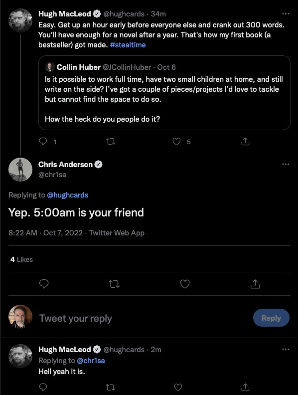

5:00am is the enemy
Apropos of my attempt this year to build a new creative writing habit, I saw this small exchange on twitter on how to squeeze in writing time:

I've been meaning to post more things on my blog, perpetually, for 20 years. So, here's some of what I posted on Twitter in a mini-rant:
5:00am is how I wrote a handful of tech books, about 15 years ago. That basically quenched any further desire I had to write books - or even 300 words per day at all. Been questing around for an alternate approach ever since.
Though never bestsellers, I think the books did help buy me some measure of dayjob career propulsion as a software engineer. Didn't do me favors as a writer, though.
I think what I've learned is that hustle culture doesn't work for me. Or, if it once did, it does no longer. The mechanism has overheated and permanently fused. I'm already operating at near to over capacity in everything I'm doing. I don't have spare willpower or executive function to arbitrarily carve out more. Something else has to give or burn.
And, given how important the notion of sleep hygiene has become for me, "just don't sleep" strikes me as one of the worst possible lifehacks.
Anyway, this brought to you by the visceral soul shudders induced in me by the phrase "5:00am is your friend"